3. De basisprincipes van webontwikkeling in Java
We gaan nu in op de ontwikkeling van dynamische webapplicaties, c.a.d. Dit zijn applicaties waarbij de pagina's HTML die naar de gebruiker worden verzonden, door programma's worden gegenereerd.
3.1. Een webproject aanmaken in Eclipse
We gaan een eerste webapplicatie ontwikkelen met Eclipse/Tomcat. We volgen een aanpak die vergelijkbaar is met die voor het maken van een webapplicatie zonder Eclipse. Nadat Eclipse is opgestart, maken we een nieuw project aan:

dat we definiëren als een dynamisch webproject:

Op de eerste pagina van de aanmaakwizard geven we de naam van het project [1] en de locatie [2] op:

Op de tweede pagina van de wizard accepteren we de standaardwaarden:

Op de laatste pagina van de wizard wordt ons gevraagd de context [3] van de applicatie te definiëren:

Zodra de wizard is bevestigd door [Finish], maakt Eclipse verbinding met de site [http://java.sun.com] om bepaalde documenten op te halen die het in de cache wil opslaan om onnodige netwerktoegang te voorkomen. Er wordt dan om licentievergunning gevraagd:

We accepteren dit. Eclipse maakt het webproject aan. Om dit weer te geven, gebruikt het een omgeving, een zogenaamd perspectief, dat verschilt van dat wat voor een klassiek Java-project wordt gebruikt:

Het perspectief dat bij een webproject hoort, is het perspectief J2EE. We accepteren dit om te zien... Het resultaat is als volgt:

Het perspectief J2EE is in feite onnodig complex voor eenvoudige webprojecten. In dit geval volstaat het Java-perspectief. Om dit te verkrijgen, gebruiken we de optie [Window -> Open perspective -> Java]:

src: bevat de Java-code van de klassen van de applicatie, evenals de bestanden die in de map Classpath van de applicatie moeten staan.
build/classes (niet weergegeven): bevat de .class-bestanden van de gecompileerde klassen en een kopie van alle andere bestanden dan .java die in src staan. Een webapplicatie maakt vaak gebruik van zogenaamde „bronbestanden” die in de Classpath van de applicatie moeten staan, c.a.d. alle mappen die door de JVM worden doorzocht wanneer de applicatie naar een klasse verwijst, hetzij tijdens het compileren, hetzij tijdens de uitvoering. Eclipse zorgt ervoor dat de map build/classes deel uitmaakt van de web-c. De "resource"-bestanden worden in de map src geplaatst, in de wetenschap dat Eclipse ze automatisch naar build/classes zal kopiëren.
WebContent: bevat de bronnen van de webapplicatie die niet in de map Classpath van de applicatie hoeven te staan.
WEB-INF/lib: bevat de .jar-archieven die de webapplicatie nodig heeft.
Laten we de inhoud bekijken van het bestand [WEB-INF/web.xml] dat de applicatie [personne] configureert:
<?xml version="1.0" encoding="UTF-8"?>
<web-app id="WebApp_ID" version="2.4" xmlns="http://java.sun.com/xml/ns/j2ee" xmlns:xsi="http://www.w3.org/2001/XMLSchema-instance" xsi:schemaLocation="http://java.sun.com/xml/ns/j2ee http://java.sun.com/xml/ns/j2ee/web-app_2_4.xsd">
<display-name> personne</display-name>
<welcome-file-list>
<welcome-file>index.html</welcome-file>
<welcome-file>index.htm</welcome-file>
<welcome-file>index.jsp</welcome-file>
<welcome-file>default.html</welcome-file>
<welcome-file>default.htm</welcome-file>
<welcome-file>default.jsp</welcome-file>
</welcome-file-list>
</web-app>
We zijn dit type configuratie al tegengekomen toen we in paragraaf 2.3.4 het aanmaken van startpagina’s hebben besproken. Dit bestand doet niets anders dan een reeks startpagina’s definiëren. We behouden alleen de eerste. Het bestand [web.xml] ziet er dan als volgt uit:
<?xml version="1.0" encoding="UTF-8"?>
<web-app id="WebApp_ID" version="2.4"
xmlns="http://java.sun.com/xml/ns/j2ee"
xmlns:xsi="http://www.w3.org/2001/XMLSchema-instance"
xsi:schemaLocation="http://java.sun.com/xml/ns/j2ee http://java.sun.com/xml/ns/j2ee/web-app_2_4.xsd">
<display-name>personne</display-name>
<welcome-file-list>
<welcome-file>index.html</welcome-file>
</welcome-file-list>
</web-app>
De inhoud van het bovenstaande bestand XML moet voldoen aan de syntaxisregels die zijn gedefinieerd in het bestand dat wordt aangeduid door het attribuut [xsi:schemaLocation] van de openings-tag <web-app>. Dit bestand is hier [http://java.sun.com/xml/ns/j2ee/web-app_2_4.xsd]. Dit is een XML-bestand dat rechtstreeks via een browser kan worden opgevraagd. Als de browser recent genoeg is, zal deze een XML-bestand weergeven:

Eclipse zal de geldigheid van het document XML controleren aan de hand van het .xsd-bestand dat is opgegeven in het attribuut [xsi:schemaLocation] van de openings-tag <web-app>. Hiervoor zal het een netwerkverbinding tot stand brengen. Als uw computer zich in een privénetwerk bevindt, moet u Eclipse aangeven welke machine moet worden gebruikt om het privénetwerk te verlaten, de zogenaamde proxy HTTP. Dit doet u met de optie [Window -> Preferences -> Internet]:

Vink (1) aan als u zich in een privénetwerk bevindt. In (2) geeft u de naam op van de machine die de proxy HTTP ondersteunt en in (3) de luisterpoort daarvan. Ten slotte geeft u in (4) de computers op waarvoor de proxy niet moet worden gebruikt, namelijk computers die zich in hetzelfde privénetwerk bevinden als de computer waarmee u werkt.
We gaan nu het bestand [index.html] van de startpagina aanmaken.
3.2. Een startpagina aanmaken
We klikken met de rechtermuisknop op de map [WebContent] en kiezen vervolgens de optie [New -> Other]:

We kiezen het type [HTML] en maken van [Next] ->
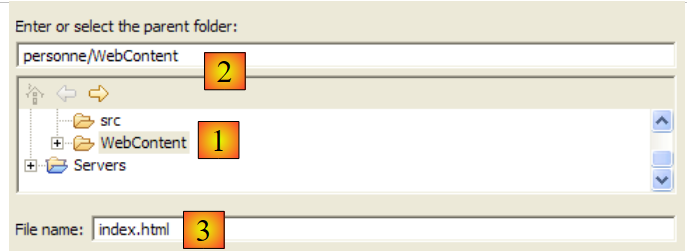
Hierboven selecteren we de bovenliggende map [WebContent] in (1) of (2) en geven we vervolgens in (3) de naam op van het aan te maken bestand. Zodra dit is gebeurd, gaan we naar de volgende pagina van de wizard:

Met (1) kunnen we een bestand HTML genereren dat vooraf is ingevuld met (2). Als we het vinkje bij (1) verwijderen, genereren we een leeg bestand HTML. We laten (1) aangevinkt om te profiteren van een codeskelet. We ronden de wizard af met [Finish]. Het bestand [index.html] wordt dan aangemaakt:

met de volgende inhoud:
<!DOCTYPE HTML PUBLIC "-//W3C//DTD HTML 4.01 Transitional//EN">
<html>
<head>
<meta http-equiv="Content-Type" content="text/html; charset=ISO-8859-1">
<title>Insert title here</title>
</head>
<body>
</body>
</html>
We wijzigen dit bestand als volgt:
<!DOCTYPE HTML PUBLIC "-//W3C//DTD HTML 4.01 Transitional//EN">
<html>
<head>
<meta http-equiv="Content-Type" content="text/html; charset=ISO-8859-1">
<title>Application personne</title>
</head>
<body>
Application personne active...
<br>
<br>
Vous êtes sur la page d'accueil
</body>
</html>
3.3. Test van de startpagina
Als deze niet aanwezig is, openen we de weergave [Servers] met de optie [Window - > Show View -> Other -> Servers] en klikken we vervolgens met de rechtermuisknop op de Tomcat 5.5-server:

Met de bovenstaande optie [Add and Remove Objects] kunt u webapplicaties aan de Tomcat-server toevoegen of verwijderen:

De webprojecten die Eclipse kent, worden weergegeven in (1). Je kunt ze op de Tomcat-server registreren via (2). De webapplicaties die bij de Tomcat-server zijn geregistreerd, verschijnen in (4). Je kunt ze deregistreren met (3). Laten we het project [personne] registreren:

en ronden we de registratiewizard af met [Finish]. Het overzicht [Servers] laat zien dat het project [personne] op Tomcat is geregistreerd:

Laten we nu de Tomcat-server starten:
 |  |
Laten we de webbrowser starten:

en vragen vervolgens de URL [http://localhost:8080/personne] op. Deze URL is die van de root van de webapplicatie. Er wordt geen document opgevraagd. In dit geval wordt de startpagina van de applicatie weergegeven. Als deze niet bestaat, wordt er een foutmelding weergegeven. Hier bestaat de startpagina wel. Het is het bestand [index.html] dat we eerder hebben aangemaakt. Het resultaat is als volgt:

Dit komt overeen met wat we hadden verwacht. Laten we nu een browser buiten Eclipse openen en dezelfde URL opvragen:
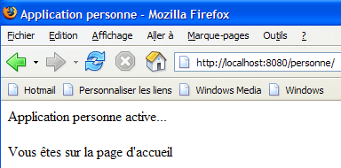
De webapplicatie [personne] is dus ook buiten Eclipse bekend.
3.4. Een formulier HTML aanmaken
We maken nu een statisch document HTML [formulaire.html] aan in de map [personne]:

Om dit aan te maken, volgen we de procedure die wordt beschreven in paragraaf 3.2, pagina 33. De inhoud ervan is als volgt:
<!DOCTYPE HTML PUBLIC "-//W3C//DTD HTML 4.01 Transitional//EN">
<html>
<head>
<title>Personne - formulaire</title>
</head>
<body>
<center>
<h2>Personne - formulaire</h2>
<hr>
<form action="" method="post">
<table>
<tr>
<td>Nom</td>
<td><input name="txtNom" value="" type="text" size="20"></td>
</tr>
<tr>
<td>Age</td>
<td><input name="txtAge" value="" type="text" size="3"></td>
</tr>
</table>
<table>
<tr>
<td><input type="submit" value="Envoyer"></td>
<td><input type="reset" value="Retablir"></td>
<td><input type="button" value="Effacer"></td>
</tr>
</table>
</form>
</center>
</body>
</html>
De bovenstaande code HTML komt overeen met het onderstaande formulier:

type HTML | naam | code HTML | rol | |
<input type="text"> | txtNom | regel 14 | naam invoeren | |
<input type="text"> | txtAge | regel 18 | leeftijd invoeren | |
<input type="submit"> | regel 23 | de ingevoerde waarden naar de server verzenden via de URL /personne1/main | ||
<input type="reset"> | regel 24 | om de pagina terug te zetten in de staat waarin deze aanvankelijk door de browser werd ontvangen | ||
<input type="button"> | regel 25 | om de inhoud van de invoervelden [1] en [2] te wissen |
Laten we het document opslaan in de map <persoon>/WebContent. Start Tomcat indien nodig. Roep met een browser de pagina URL http://localhost:8080/personne/formulaire.html op:

De client/server-architectuur van deze eenvoudige applicatie is als volgt:

De webserver bevindt zich tussen de gebruiker en de webapplicatie en is hier niet weergegeven. [formulaire.html] is een statisch document dat bij elk verzoek van de klant dezelfde inhoud levert. Webprogrammering heeft tot doel inhoud te genereren die is afgestemd op het verzoek van de klant. Deze inhoud wordt vervolgens programmatisch gegenereerd. Een eerste oplossing is om een JSP-pagina (Java Server Page) te gebruiken in plaats van het statische bestand HTML. Dat gaan we nu bekijken.
3.5. Een JSP-pagina aanmaken
Lezingen [ref1]: hoofdstuk 1, hoofdstuk 2: 2.2, 2.2.1, 2.2.2, 2.2.3, 2.2.4
De vorige client/server-architectuur wordt als volgt omgezet:

Een pagina JSP is een geconfigureerde variant van de pagina HTML. Bepaalde elementen van de pagina krijgen pas tijdens de uitvoering een waarde toegewezen. Deze waarden worden programmatisch berekend. We hebben dus te maken met een dynamische pagina: opeenvolgende verzoeken voor de pagina kunnen verschillende antwoorden opleveren. We noemen hier ‘antwoord’ de pagina HTML die door de clientbrowser wordt weergegeven. Uiteindelijk ontvangt de browser altijd een document met de naam HTML. Dit document HTML wordt door de webserver gegenereerd op basis van de pagina JSP. Deze dient als sjabloon. De dynamische elementen ervan worden vervangen door hun daadwerkelijke waarden op het moment dat het document HTML wordt gegenereerd.
Om een pagina JSP aan te maken, klikken we met de rechtermuisknop op de map [WebContent] en kiezen we vervolgens de optie [New -> Other]:

We kiezen het type [JSP] en maken [Next] ->
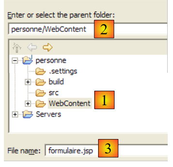
Hierboven selecteren we de bovenliggende map [WebContent] in (1) of (2) en geven we vervolgens in (3) de naam op van het aan te maken bestand. Zodra dit is gebeurd, gaan we naar de volgende pagina van de wizard:

Met (1) kunnen we een bestand JSP genereren dat vooraf is ingevuld met (2). Als we het vinkje bij (1) verwijderen, genereren we een leeg bestand JSP. We laten (1) aangevinkt om te profiteren van een codeskelet. We ronden de wizard af met [Finish]. Het bestand [formulaire.jsp] wordt dan aangemaakt:
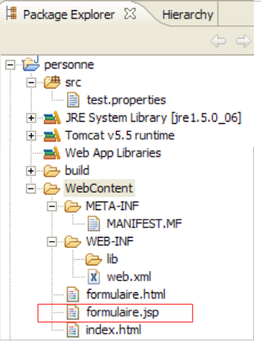
met de volgende inhoud:
<%@ page language="java" contentType="text/html; charset=ISO-8859-1" pageEncoding="ISO-8859-1"%>
<!DOCTYPE HTML PUBLIC "-//W3C//DTD HTML 4.01 Transitional//EN">
<html>
<head>
<meta http-equiv="Content-Type" content="text/html; charset=ISO-8859-1">
<title>Insert title here</title>
</head>
<body>
</body>
</html>
Regel 1 geeft aan dat het om een pagina JSP gaat. We zetten de bovenstaande tekst als volgt om:
<%@ page language="java" contentType="text/html; charset=ISO-8859-1"
pageEncoding="ISO-8859-1"%>
<!DOCTYPE HTML PUBLIC "-//W3C//DTD HTML 4.01 Transitional//EN">
<%
// hiermee worden de parameters opgehaald
String nom=request.getParameter("txtNom");
if(nom==null) nom="inconnu";
String age=request.getParameter("txtAge");
if(age==null) age="xxx";
%>
<html>
<head>
<meta http-equiv="Content-Type" content="text/html; charset=ISO-8859-1">
<title>Personne - formulaire</title>
</head>
<body>
<center>
<h2>Personne - formulaire</h2>
<hr>
<form action="" method="post">
<table>
<tr>
<td>Nom</td>
<td><input name="txtNom" value="<%= nom %>" type="text" size="20"></td>
</tr>
<tr>
<td>Age</td>
<td><input name="txtAge" value="<%= age %>" type="text" size="3"></td>
</tr>
</table>
<table>
<tr>
<td><input type="submit" value="Envoyer"></td>
<td><input type="reset" value="Rétablir"></td>
<td><input type="button" value="Effacer"></td>
</tr>
</table>
</form>
</center>
</body>
</html>
Het aanvankelijk statische document is nu dynamisch geworden door de toevoeging van Java-code. Voor dit type document gaan we altijd als volgt te werk:
- we plaatsen Java-code aan het begin van het document om de parameters op te halen die nodig zijn om het document weer te geven. Deze bevinden zich vaak in het `request`-object. Dit object vertegenwoordigt het verzoek van de client. Dit verzoek kan door verschillende servlets en JSP-pagina’s zijn gegaan die het mogelijk hebben verrijkt. Hier komt het rechtstreeks vanuit de browser bij ons terecht.
- De code HTML volgt hierna. Deze code zal meestal alleen variabelen weergeven die eerder in de Java-code zijn berekend, met behulp van de tags <%= variabele %>. Let er hier op dat het teken = direct achter het teken % staat. Dit is een veelvoorkomende oorzaak van fouten.
Wat doet het voorgaande dynamische document?
- regels 6-9: het haalt uit het verzoek twee parameters op, genaamd [txtNom] en [txtAge], en zet hun waarden in de variabelen [nom] (regel 6) en [age] (regel 8). Als hij de parameters niet vindt, wijst hij de bijbehorende variabelen standaardwaarden toe.
- Het geeft de waarde van de twee variabelen [nom, age] weer in de volgende code HTML (regels 25 en 29).
Laten we een eerste test uitvoeren. Start Tomcat indien nodig op en roep vervolgens met een browser de pagina URL http://localhost:8080/personne/formulaire.jsp op:

Het document formulaire.jsp is opgevraagd zonder parameters door te geven. Daarom zijn de standaardwaarden weergegeven. Laten we nu het document URL opvragenhttp://localhost:8080/personne/formulaire.jsp?txtNom=martin&txtAge=14:
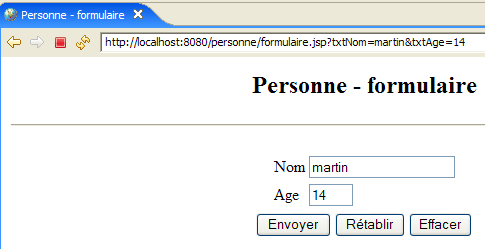
Deze keer hebben we de parameters txtNom en txtAge, die het document formulaire.jsp verwacht, doorgegeven. Het heeft ze dus weergegeven. We weten dat er twee methoden zijn om parameters door te geven aan een webdocument: GET en POST. In beide gevallen zijn de doorgegeven parameters terug te vinden in het vooraf gedefinieerde object **request**. Hier zijn ze doorgegeven via de methode GET.
3.6. Een servlet maken
Leesmateriaal [ref1]: hoofdstuk 1, hoofdstuk 2: 2.1, 2.1.1, 2.1.2, 2.3.1
In de vorige versie werd het verzoek van de client verwerkt door een pagina JSP. Bij de eerste aanroep hiervan maakt de webserver, in dit geval Tomcat, een Java-klasse aan op basis van deze pagina en compileert deze. Het resultaat van deze compilatie verwerkt uiteindelijk het verzoek van de client. De klasse die wordt gegenereerd op basis van de pagina JSP is een servlet, omdat deze de interface [javax.Servlet] implementeert:

Het verzoek van de client kan worden verwerkt door elke klasse die deze interface implementeert. We bouwen nu een dergelijke klasse: ServletFormulaire. De eerdere client/server-architectuur wordt als volgt aangepast:

Met de op de pagina gebaseerde architectuur JSP werd het document HTML dat naar de klant werd verzonden, door de webserver gegenereerd op basis van de pagina JSP, die als sjabloon diende. Hier wordt het document HTML dat naar de client wordt verzonden, volledig door de servlet gegenereerd.
3.6.1. De servlet aanmaken
Klik in Eclipse met de rechtermuisknop op de map [src] en kies de optie om een klasse aan te maken:
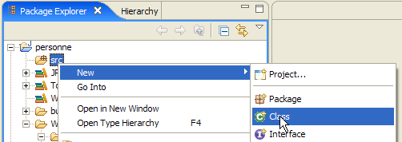
Vervolgens definiëren we de kenmerken van de aan te maken klasse:

In (1) vult u een pakketnaam in, in (2) de naam van de aan te maken klasse. Deze moet afleiden van de klasse die in (3) is aangegeven. Het is niet nodig om de volledige naam hiervan zelf in te voeren. Met de knop (4) krijgt u toegang tot de klassen die momenteel in de Classpath van de webapplicatie staan:

In (1) voert u de naam van de gezochte klasse in. In (2) krijgt u de klassen uit het bestand Classpath te zien waarvan de naam de in (1) ingevoerde tekenreeks bevat.
Na goedkeuring door de aanmaakwizard wordt het webproject [personne] als volgt gewijzigd:

De klasse [ServletFormulaire] is aangemaakt met een codebasis:
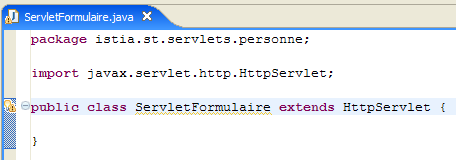
De bovenstaande schermafbeelding laat zien dat Eclipse een [warning] aangeeft op de regel waarop de klasse wordt gedeclareerd. Laten we op het pictogram (lampje) klikken dat deze [warning] aangeeft:

Nadat we op (1) hebben geklikt, worden ons in (2) oplossingen aangeboden om de foutmelding [warning] te verhelpen. Als we een van deze oplossingen selecteren, verschijnt in (3) de codewijziging die deze keuze met zich meebrengt.
Java 1.5 heeft wijzigingen in de Java-taal met zich meegebracht en wat in een eerdere versie correct was, kan nu aanleiding geven tot [warnings]. Deze wijzen niet op fouten die de compilatie van de klasse zouden kunnen verhinderen. Ze zijn bedoeld om de aandacht van de ontwikkelaar te vestigen op punten in de code die verbeterd zouden kunnen worden. De hier genoemde [warning] geeft aan dat een klasse een versienummer zou moeten hebben. Dit wordt gebruikt voor het serialiseren/deserialiseren van objecten, c.a.d. wanneer een Java-object .class in het geheugen moet worden omgezet in een reeks bits die sequentieel in een schrijfstroom worden verzonden, of omgekeerd wanneer een Java-object .class in het geheugen moet worden aangemaakt op basis van een reeks bits die sequentieel uit een leesstroom worden gelezen. Dit alles staat ver af van onze huidige aandachtspunten. Daarom gaan we de compiler vragen deze waarschuwing te negeren door de oplossing [Add @SuppressWarnings ...] te kiezen. De code ziet er dan als volgt uit:

Er is geen [warning] meer. De toegevoegde regel wordt een "annotatie" genoemd, een begrip dat met Java 1.5 is geïntroduceerd. We zullen deze code later aanvullen.
3.6.2. Classpath van een Eclipse-project
De Classpath van een Java-toepassing is de verzameling mappen en archives.jar die worden doorzocht wanneer de compiler de toepassing compileert of wanneer de JVM deze uitvoert. Deze twee Classpath'en zijn niet noodzakelijkerwijs identiek, aangezien sommige klassen alleen bij de uitvoering van pas komen en niet bij het compileren. Zowel de Java-compiler als de JVM beschikken over een argument waarmee de Classpath van de te compileren of uit te voeren applicatie kan worden gespecificeerd. Op een voor de gebruiker min of meer transparante manier zorgt Eclipse voor het samenstellen en doorgeven van dit argument aan de JVM.
Hoe kun je de elementen van de Classpath van een Eclipse-project achterhalen? Met de optie [<projet> / Build Path / Configure Build Path]:

We krijgen dan de volgende configuratiewizard te zien:

Op het tabblad (1) [Libraries] kun je de lijst met .jar-archieven definiëren die deel uitmaken van de Classpath van de applicatie. Deze worden dus door de JVM doorzocht wanneer de applicatie om een klasse vraagt. Met de knoppen [2] en [3] kunt u archieven toevoegen aan de Classpath. Met de knop [2] kunt u archieven selecteren die zich in de mappen van door Eclipse beheerde projecten bevinden, terwijl u met de knop [3] elk willekeurig archief uit het bestandssysteem van de computer kunt selecteren.
Hierboven zijn drie bibliotheken (Libraries) te zien:
- [JRE System Library]: basisbibliotheek voor Java-projecten in Eclipse:
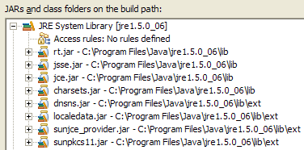
- [Tomcat v5.5 runtime]: bibliotheek die door de Tomcat-server wordt geleverd. Deze bevat de klassen die nodig zijn voor webontwikkeling. Deze bibliotheek is opgenomen in elk Eclipse-webproject dat aan de Tomcat-server is gekoppeld.

Het is het archief [servlet-api.jar] dat de klasse [javax.servlet.http.HttpServlet] bevat, de bovenliggende klasse van de klasse [ServletFormulaire] die we momenteel aan het aanmaken zijn. Omdat dit archief zich in het Classpath van de applicatie bevindt, kon het worden voorgesteld als bovenliggende klasse in de hieronder weergegeven wizard.

Als dat niet het geval was geweest, zou het niet zijn verschenen in de suggesties voor [2]. Als men dus in deze wizard naar een bovenliggende klasse wil verwijzen en deze niet wordt voorgesteld, betekent dit dat men zich ofwel vergist in de naam van deze klasse, ofwel dat het archief waarin deze zich bevindt niet in het Classpath van de applicatie staat.
- [Web App Libraries] bevat de archieven die zich in de map [WEB-INF/lib] van het project bevinden. Hier is deze map leeg:

De archieven van Classpath van het Eclipse-project zijn aanwezig in de projectverkenner. Bijvoorbeeld voor het webproject [personne]:
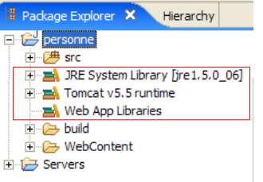
Via de projectverkenner hebben we toegang tot de inhoud van deze archieven:

Zoals hierboven te zien is, bevat het archief [servlet-api.jar] de klasse [javax.servlet.http.HttpServlet].
3.6.3. Configuratie van de servlet
Lezingen [ref1]: hoofdstuk 2: 2.3, 2.3.1, 2.3.2, 2.3.3, 2.3.4
Het bestand [WEB-INF/web.xml] wordt gebruikt om de webapplicatie te configureren:

Dit bestand, voor het project [personne], ziet er momenteel als volgt uit (zie pagina 32):
<?xml version="1.0" encoding="UTF-8"?>
<web-app id="WebApp_ID" version="2.4"
xmlns="http://java.sun.com/xml/ns/j2ee"
xmlns:xsi="http://www.w3.org/2001/XMLSchema-instance"
xsi:schemaLocation="http://java.sun.com/xml/ns/j2ee http://java.sun.com/xml/ns/j2ee/web-app_2_4.xsd">
<display-name>personne</display-name>
<welcome-file-list>
<welcome-file>index.html</welcome-file>
</welcome-file-list>
</web-app>
Het geeft alleen aan dat er een startpagina bestaat (regel 8). We passen het aan om het volgende aan te geven:
- het bestaan van de servlet [ServletFormulaire]
- de URL die door deze servlet worden verwerkt
- de initialisatieparameters van de servlet
Het bestand web.xml van onze toepassing ‘persoon’ ziet er dan als volgt uit:
<?xml version="1.0" encoding="UTF-8"?>
<web-app id="WebApp_ID" version="2.4"
xmlns="http://java.sun.com/xml/ns/j2ee"
xmlns:xsi="http://www.w3.org/2001/XMLSchema-instance"
xsi:schemaLocation="http://java.sun.com/xml/ns/j2ee http://java.sun.com/xml/ns/j2ee/web-app_2_4.xsd">
<display-name>personne</display-name>
<servlet>
<servlet-name>formulairepersonne</servlet-name>
<servlet-class>
istia.st.servlets.personne.ServletFormulaire
</servlet-class>
<init-param>
<param-name>defaultNom</param-name>
<param-value>inconnu</param-value>
</init-param>
<init-param>
<param-name>defaultAge</param-name>
<param-value>XXX</param-value>
</init-param>
</servlet>
<servlet-mapping>
<servlet-name>formulairepersonne</servlet-name>
<url-pattern>/formulaire</url-pattern>
</servlet-mapping>
<welcome-file-list>
<welcome-file>index.html</welcome-file>
</welcome-file-list>
</web-app>
De belangrijkste punten van dit configuratiebestand zijn de volgende:
- de regels 7-24 hebben betrekking op de aanwezigheid van de servlet [ServletFormulaire]
- regels 7-20: de configuratie van een servlet vindt plaats tussen de tags <servlet> en </servlet>. Een toepassing kan meerdere servlets bevatten en dus evenveel configuratiesecties <servlet>...</servlet>.
- regel 8: de tag <servlet-name> wijst een naam toe aan de servlet – dit kan een willekeurige naam zijn
- regels 9-11: de tag <servlet-class> geeft de volledige naam van de klasse die bij de servlet hoort. Tomcat gaat op zoek naar deze klasse in het webproject Classpath van het webproject [personne]. Hij vindt deze in [build/classes]:

- regels 12-15: de tag <init-param> wordt gebruikt om configuratieparameters door te geven aan de servlet. Deze worden doorgaans gelezen in de init-methode van de servlet, omdat de configuratieparameters ervan al bij het eerste laden bekend moeten zijn.
- regels 13-14: de tag <param-name> bepaalt de naam van de parameter en <param-value> de waarde ervan.
- de regels 12-15 definiëren een parameter [defaultNom,"inconnu"] en de regels 16-19 een parameter [defaultAge,"XXX"]
- regels 21-24: de tag <servlet-mapping> dient om een servlet (servlet-name) te koppelen aan een patroon van URL (url-pattern). Hier is het patroon eenvoudig. Het geeft aan dat telkens wanneer een URL de vorm /formulaire heeft, de servlet formulairepersonne, c.a.d, moet worden gebruikt. De klasse [istia.st.servlets.ServletFormulaire] (regels 8-11). Er is dus slechts één URL die door de servlet [formulairepersonne] wordt geaccepteerd.
3.6.4. De code van de servlet [ServletFormulaire]
De servlet [ServletFormulaire] zal de volgende code hebben:
Al bij het doorlezen van de servlet valt op dat deze veel complexer is dan de bijbehorende pagina JSP. Dit is een algemeen verschijnsel: een servlet is niet geschikt om HTML-code te genereren. Daarvoor zijn de JSP-pagina’s bedoeld. We zullen hier later op terugkomen. Laten we enkele belangrijke punten van de bovenstaande servlet toelichten:
- wanneer een servlet voor de eerste keer wordt aangeroepen, wordt de methode init (regel 20) aangeroepen. Dit is het enige geval waarin deze methode wordt aangeroepen.
- Als de servlet is aangeroepen via de methode HTTP GET, wordt de methode doGet (regel 32) aangeroepen om het verzoek van de client te verwerken.
- Als de servlet is aangeroepen via de methode HTTP POST, wordt de methode doPost (regel 82) aangeroepen om het verzoek van de client te verwerken.
De methode init dient hier om in [web.xml] de waarden op te halen van de initialisatieparameters met de namen "defaultNom" en "defaultAge". De methode init, die wordt uitgevoerd bij het eerste laden van de servlet, is de juiste plaats om de inhoud van het bestand [web.xml] op te halen.
- regel 22: de configuratie [config] van het webproject wordt opgehaald. Dit object weerspiegelt de inhoud van het bestand [WEB-INF/web.xml] van de applicatie.
- regel 23: in deze configuratie wordt de waarde van het type String opgehaald van de parameter met de naam "defaultNom". Deze parameter heeft als waarde de naam van een persoon. Als deze niet bestaat, krijgen we de waarde null.
- regels 24-25: als de parameter met de naam "defaultNom" niet bestaat, wordt er een standaardwaarde toegekend aan de variabele [defaultNom].
- regels 26-29: hetzelfde gebeurt voor de parameter met de naam "defaultAge".
De methode doPost verwijst naar de methode doGet. Dit betekent dat de klant zijn parameters zowel via een POST als via een GET kan verzenden.
De methode doGet:
- regel 32: de methode ontvangt twee parameters: `request` en `response`. `request` is een object dat het volledige verzoek van de klant vertegenwoordigt. Het is van het type `HttpServletRequest`, wat een interface is. `response` is van het type `HttpServletResponse`, wat eveneens een interface is. Het object `response` wordt gebruikt om een antwoord naar de klant te sturen.
- request.getParameter("param") wordt gebruikt om uit het verzoek van de klant de waarde van de parameter met de naam param op te halen. Op regel 36 wordt de waarde van de parameter "txtNom" opgehaald, op regel 40 die van de parameter "txtAge". Als deze parameters niet in het verzoek voorkomen, wordt de waarde null als parameterwaarde opgehaald.
- regels 37-39: als de parameter "txtNom" niet in de aanvraag voorkomt, wordt aan de variabele "naam" de standaardnaam "defaultNom" toegewezen, die in de methode init is geïnitialiseerd. Hetzelfde gebeurt in de regels 41-43 voor de leeftijd.
- regel 45: response.setContentType(String) wordt gebruikt om de waarde van de header HTTP Content-type vast te leggen. Deze header geeft aan de client aan wat voor soort document hij zal ontvangen. Het type text/html duidt op een HTML-document.
- regel 46: response.getWriter() wordt gebruikt om een schrijfstroom naar de client te verkrijgen
- regels 47-78: het document HTML dat naar de client moet worden verzonden, wordt in de in regel 46 verkregen schrijfstroom geschreven.
Het compileren van deze servlet levert een .class-bestand op in de map [build/classes] van het project [personne]:

De lezer wordt verzocht de Java-help over servlets te raadplegen. Hierbij kan Tomcat als hulpmiddel worden gebruikt. Op de startpagina van Tomcat 5 is een link [Documentation] te vinden:

Deze link leidt naar een pagina die de lezer kan verkennen. De link naar de documentatie over servlets is de volgende:

3.6.5. De servlet testen
We zijn klaar om een test uit te voeren. Start de Tomcat-server indien nodig.

Vervolgens roepen we met een browser de URL URL [http://localhost:8080/personne/formulaire] op. We roepen hier de URL [/formulaire] op uit de context [/personne]. Het bestand [web.xml] van deze context geeft aan dat de URL [/formulaire] wordt verwerkt door de servlet met de naam [formulairepersonne]. In hetzelfde bestand staat vermeld dat deze servlet de klasse [istia.st.servlets.ServletFormulaire] is. Tomcat zal de verwerking van het verzoek van de client dus aan deze klasse toewijzen. Als de klasse nog niet geladen was, wordt deze geladen. De klasse blijft dan in het geheugen staan voor toekomstige verzoeken.
Met de interne browser van Eclipse krijgen we het volgende resultaat:

We krijgen de standaardwaarden voor de naam en de leeftijd te zien, die zijn vastgelegd in het bestand [web.xml]. Laten we nu URL en [http://localhost:8080/personne/formulaire?txtNom=tintin&txtAge=30] opvragen:

Deze keer krijgen we de parameters die in de aanvraag zijn doorgegeven. De lezer wordt verzocht de code van de servlet [ServletFormulaire] nog eens door te nemen als hij deze twee resultaten niet begrijpt.
3.6.6. Automatisch herladen van de webapplicatiecontext
Laten we Tomcat starten:

en passen we vervolgens de code van de servlet als volgt aan:
- regel 8 is gewijzigd
Laten we de nieuwe klasse opslaan. Deze opslag zorgt ervoor dat Eclipse de klasse [ServletFormulaire] automatisch opnieuw compileert, wat door Tomcat wordt gedetecteerd. Vervolgens zal Tomcat de context van de webapplicatie [personne] opnieuw laden om de wijzigingen door te voeren. Dit is te zien in de logbestanden van de weergave [console]:

Laten we de URL [http://localhost:8080/personne/formulaire] opvragen zonder Tomcat opnieuw te starten:

De aangebrachte wijziging is inderdaad doorgevoerd.
Laten we nu het bestand [web.xml] als volgt wijzigen:
<?xml version="1.0" encoding="UTF-8"?>
<web-app id="WebApp_ID" version="2.4"
xmlns="http://java.sun.com/xml/ns/j2ee"
xmlns:xsi="http://www.w3.org/2001/XMLSchema-instance"
xsi:schemaLocation="http://java.sun.com/xml/ns/j2ee http://java.sun.com/xml/ns/j2ee/web-app_2_4.xsd">
<display-name>personne</display-name>
<servlet>
<servlet-name>formulairepersonne</servlet-name>
...
<init-param>
<param-name>defaultNom</param-name>
<param-value>INCONNU</param-value>
</init-param>
...
</servlet>
...
</web-app>
- regel 12 is gewijzigd
Laten we vervolgens het nieuwe bestand [web.xml] opslaan. In de weergave [console] is er geen logbericht dat aangeeft dat de applicatiecontext opnieuw is geladen. Laten we de URL [http://localhost:8080/personne/formulaire] opvragen zonder Tomcat opnieuw te starten:
De aangebrachte wijziging is niet doorgevoerd. Laten we Tomcat opnieuw opstarten: [clic droit sur serveur -> Restart -> Start]:

en vragen we vervolgens opnieuw de URL [http://localhost:8080/personne/formulaire] op:
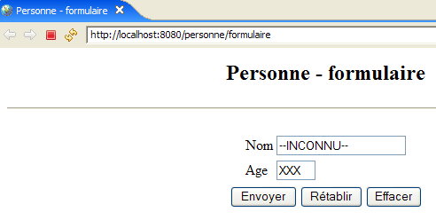
Deze keer is de wijziging in [web.xml] zichtbaar.
Een wijziging in [web.xml] leidt dus niet tot een automatische herlaadbeurt van de applicatie, waarbij het nieuwe configuratiebestand in aanmerking zou worden genomen. Om het herladen van de webapplicatie te forceren, kunnen we Tomcat opnieuw opstarten zoals we eerder hebben gedaan, maar dit is een vrij traag proces. Het is beter om gebruik te maken van de tool [manager] voor het beheer van applicaties die in Tomcat zijn geïmplementeerd. Om dit mogelijk te maken, moet Tomcat binnen Eclipse zijn geconfigureerd zoals beschreven in paragraaf 2.5.
Laten we eerst met de interne browser van Eclipse de URL [http://localhost:8080] opvragen en vervolgens de link [Tomcat Manager] volgen, zoals uitgelegd aan het einde van paragraaf 2.5:

Laten we een tweede browser openen: [clic droit sur le navigateur -> New Editor]:
 | 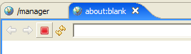 |
Laten we in dit tweede venster de URL [http://localhost:8080/formulaire] opvragen:

Laten we het bestand [web.xml] als volgt aanpassen en vervolgens opslaan:
<!-- ServletFormulaire -->
<servlet>
<servlet-name>formulairepersonne</servlet-name>
<servlet-class>
istia.st.servlets.personne.ServletFormulaire
</servlet-class>
<init-param>
<param-name>defaultNom</param-name>
<param-value>YYY</param-value>
</init-param>
<init-param>
<param-name>defaultAge</param-name>
<param-value>XXX</param-value>
</init-param>
</servlet>
Vraag vervolgens de URL [http://localhost:8080/formulaire] opnieuw op. We zien dat de wijziging niet is doorgevoerd. Ga nu naar de eerste browser en vernieuw de applicatie [personne]:

Vervolgens vragen we de URL [http://localhost:8080/formulaire] opnieuw op met de tweede browser:

De wijziging in [web.xml] is verwerkt. In de praktijk is het handig om een browser geopend te hebben op de Tomcat-applicatie [manager] om dit soort gevallen te beheren.
3.7. Samenwerking tussen servlet en JSP-pagina's
Literatuur [ref1]: hoofdstuk 2: 2.3.7
Laten we terugkeren naar de twee bestudeerde architecturen:
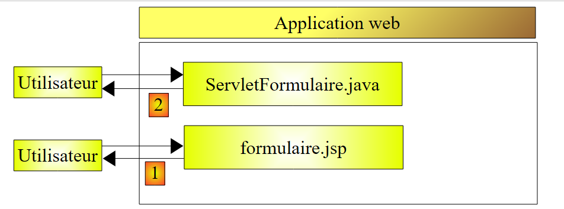
Geen van deze twee architecturen is bevredigend. Ze hebben allebei het nadeel dat ze twee technologieën door elkaar halen: die van Java-programmering, die zich bezighoudt met de logica van de webapplicatie, en die van HTML-codering, die zich bezighoudt met de weergave van informatie in een browser.
- De op de pagina gebaseerde oplossing [1] heeft het nadeel dat JSP-code en Java-code binnen één en dezelfde pagina worden vermengd. Dit kwam niet aan het licht in het behandelde voorbeeld, dat vrij eenvoudig was. Maar als [formulaire.jsp] de geldigheid van de parameters [txtNom, txtAge] van het verzoek van de client had moeten controleren, zouden we gedwongen zijn geweest om Java-code in de pagina op te nemen. Dit wordt al snel onbeheersbaar.
- De op een servlet gebaseerde oplossing [2] heeft hetzelfde probleem. Hoewel de klasse alleen uit Java-code bestaat, moet deze een document HTML genereren. Ook hier geldt dat, tenzij het HTML-document eenvoudig is, het genereren ervan ingewikkeld wordt en vrijwel onmogelijk te onderhouden is.
We gaan de vermenging van Java- en HTML-technologieën vermijden door de volgende architectuur te hanteren:

- De gebruiker stuurt zijn verzoek naar de servlet. Deze verwerkt het verzoek en stelt de waarden van de dynamische parameters samen voor de pagina JSP [formulaire.jsp], die zal worden gebruikt om het antwoord HTML aan de klant te genereren. Deze waarden vormen wat men het model van de pagina JSP noemt.
- Zodra de servlet klaar is met zijn werk, vraagt hij de pagina JSP [formulaire.jsp] om het antwoord HTML voor de klant te genereren. Tegelijkertijd zal de servlet de elementen aan de pagina JSP verstrekken die deze nodig heeft om dit antwoord te genereren; deze elementen vormen het model van de pagina.
We gaan nu deze nieuwe architectuur nader bekijken.
3.7.1. De servlet [ServletFormulaire2]
In de bovenstaande architectuur zal de servlet [ServletFormulaire2] heten. Deze wordt in hetzelfde project [personne] gebouwd als eerder, net als alle toekomstige servlets:

[ServletFormulaire2] wordt in eerste instantie verkregen door [ServletFormulaire] in Eclipse te kopiëren en te plakken:
- selecteer [ServletFormulaire.java] -> klik met de rechtermuisknop -> Kopiëren
- selecteer [istia.st.servlets.personne] -> klik met de rechtermuisknop -> Plakken -> wijzig de naam in [ServletFormulaire2.java]
Vervolgens passen we de code van [ServletFormulaire2] als volgt aan:
Alleen het gedeelte dat het antwoord genereert in HTTP is gewijzigd (regels 44-46):
- regel 46: het genereren van het antwoord wordt toevertrouwd aan de pagina JSP formulaire2.jsp. Deze pagina, die nog niet is besproken, zal de parameters weergeven die uit het verzoek van de klant zijn opgehaald: een naam (regels 35-38) en een leeftijd (regels 39-42).
- Deze twee waarden worden in de attributen van het verzoek [request] geplaatst, gekoppeld aan sleutels. De attributen van een verzoek worden beheerd als een woordenboek.
- regel 44: de naam wordt in de aanvraag geplaatst, gekoppeld aan de sleutel "naam"
- regel 45: de leeftijd wordt in de query geplaatst, gekoppeld aan de sleutel "leeftijd"
- regel 46: vraagt de weergave aan van de pagina JSP [formulaire2.jsp]. Hierbij wordt als parameter doorgegeven:
- de aanvraag [request] van de client, waardoor de pagina JSP toegang krijgt tot de attributen daarvan die zojuist door de servlet zijn geïnitialiseerd
- het antwoord [response], waardoor de pagina JSP het antwoord HTTP aan de client kan genereren
Zodra de klasse [ServletFormulaire2] is geschreven, verschijnt de gecompileerde code ervan in [build/classes]:

3.7.2. De pagina JSP [formulaire2.jsp]
De pagina JSP formulaire2.jsp wordt verkregen door de pagina [formulaire.jsp] te kopiëren en te plakken

en vervolgens als volgt bewerkt:
<%@ page language="java" contentType="text/html; charset=ISO-8859-1"
pageEncoding="ISO-8859-1"%>
<!DOCTYPE HTML PUBLIC "-//W3C//DTD HTML 4.01 Transitional//EN">
<%
// de waarden die nodig zijn voor de weergave worden opgehaald
String nom=(String)request.getAttribute("nom");
String age=(String)request.getAttribute("age");
%>
<html>
<head>
<meta http-equiv="Content-Type" content="text/html; charset=ISO-8859-1">
<title>Personne - formulaire2</title>
</head>
<body>
<center>
<h2>Personne - formulaire2</h2>
<hr>
<form action="" method="post">
<table>
<tr>
<td>Nom</td>
<td><input name="txtNom" value="<%= nom %>" type="text" size="20"></td>
</tr>
<tr>
<td>Age</td>
<td><input name="txtAge" value="<%= age %>" type="text" size="3"></td>
</tr>
</table>
<table>
<tr>
<td><input type="submit" value="Envoyer"></td>
<td><input type="reset" value="Rétablir"></td>
<td><input type="button" value="Effacer"></td>
</tr>
</table>
</form>
</center>
</body>
</html>
Alleen de regels 4-8 zijn gewijzigd ten opzichte van [formulaire.jsp]:
- regel 6: haalt de waarde op van het attribuut met de naam "naam" in de aanvraag [request], een attribuut dat is aangemaakt door de servlet [ServletFormulaire2].
- regel 7: doet hetzelfde voor het attribuut "leeftijd"
3.7.3. Configuratie van de applicatie
Het configuratiebestand [web.xml] wordt als volgt gewijzigd:
<?xml version="1.0" encoding="UTF-8"?>
<web-app id="WebApp_ID" version="2.4"
xmlns="http://java.sun.com/xml/ns/j2ee"
xmlns:xsi="http://www.w3.org/2001/XMLSchema-instance"
xsi:schemaLocation="http://java.sun.com/xml/ns/j2ee http://java.sun.com/xml/ns/j2ee/web-app_2_4.xsd">
<display-name>personne</display-name>
<!-- ServletFormulaire -->
<servlet>
<servlet-name>formulairepersonne</servlet-name>
<servlet-class>
istia.st.servlets.personne.ServletFormulaire
</servlet-class>
<init-param>
<param-name>defaultNom</param-name>
<param-value>inconnu</param-value>
</init-param>
<init-param>
<param-name>defaultAge</param-name>
<param-value>XXXX</param-value>
</init-param>
</servlet>
<!-- ServletFormulaire 2-->
<servlet>
<servlet-name>formulairepersonne2</servlet-name>
<servlet-class>
istia.st.servlets.personne.ServletFormulaire2
</servlet-class>
<init-param>
<param-name>defaultNom</param-name>
<param-value>inconnu</param-value>
</init-param>
<init-param>
<param-name>defaultAge</param-name>
<param-value>XXX</param-value>
</init-param>
</servlet>
<!-- Toewijzing ServletFormulaire -->
<servlet-mapping>
<servlet-name>formulairepersonne</servlet-name>
<url-pattern>/formulaire</url-pattern>
</servlet-mapping>
<!-- Toewijzing ServletFormulaire 2-->
<servlet-mapping>
<servlet-name>formulairepersonne2</servlet-name>
<url-pattern>/formulaire2</url-pattern>
</servlet-mapping>
<!-- startbestanden -->
<welcome-file-list>
<welcome-file>index.html</welcome-file>
</welcome-file-list>
</web-app>
We hebben het bestaande behouden en het volgende toegevoegd:
- regels 22-36: een <servlet>-sectie om de nieuwe servlet ServletFormulaire2 te definiëren
- regels 42-46: een <servlet-mapping>-sectie om deze te koppelen aan URL /formulaire2
Start de Tomcat-server indien nodig opnieuw op. We vragen om de URL
http://localhost:8080/personne/formulaire2?txtNom=milou&txtAge=10:

We krijgen hetzelfde resultaat als eerder, maar de structuur van onze applicatie is nu duidelijker: een servlet die de applicatielogica bevat en het verzenden van het antwoord naar de klant delegeert aan een pagina JSP. Vanaf nu zullen we altijd op deze manier te werk gaan.